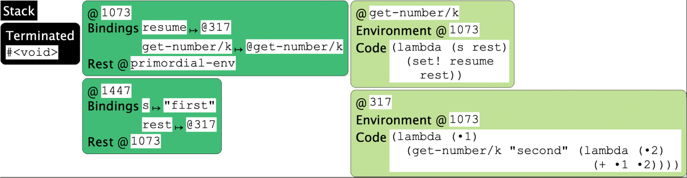
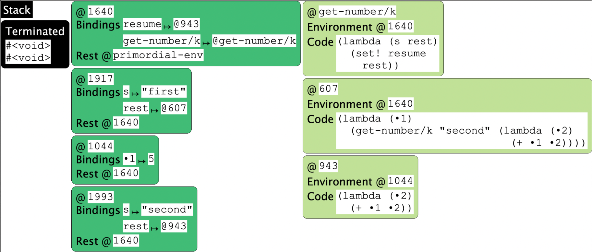

Thus, we have the same problem on both the server and client sides of the Web. The reasons are very different, but the net effect is the same: the programmer has to manually keep track of information that needs to persist, store it somewhere, halt the computation to return control to whatever called it and, when resumed, fetch information back from storage; all this code must run exactly as if an interruption had never occurred.
This programming quandary is not new. Back in the early days of computing, programmers had to manually keep track of where in memory values resided; then we got compilers that did this for us. Then we had to manually keep track of allocation on the heap to later reclaim it; then we got garbage collectors to do this for us. The history of programming languages is full of tasks that programmers did manually until we learned to create language constructs and compilers that could do these automatically. It would be nice if we could do the same here to reduce the burden of writing such programs.
To study these phenomena better, it would be helpful if we could abstract away from the details of servers, clients, JavaScript, Web pages, timeouts, and so on, and examine the phenomenon in its essence.
We can simulate the solution by assuming a new primitive, get-number/k. Instead of taking one argument, the prompt string, it also takes a second argument. This second argument is a closure that represents the rest of the computation—i.e., it’s the stack represented as a closure. This function binds that closure to a variable, resume, and then…does nothing:
(defvar yielder #false)
(deffun (get-number/k s rest)
(set! resume rest))
Recall that we want the program to invoke this function and then halt; all remaining computation—the context—needs to be in the second parameter given to get-number/k. Thus, our program now looks like this:
(get-number/k "first"
(λ (•1)
(get-number/k "second"
(λ (•2)
(+ •1 •2)))))
Terminology: The second argument—embodying the entire rest of the computation—is called the continuation, and it’s traditional to use the letter k for it.
Terminology: The program structure above has been turned inside-out: instead of the first operation being innermost and last operation outermost, the first one is outermost and the last one is innermost. This unwieldy program structure has a name: inversion of control. Instead of the client calling the helper function whose values it wants (in this case, get-number), the helper function (in this case get-number/k) calls the client. This leads to an unnatural, unwieldy, and error-prone programming style.
Sure enough, when we run this program, it just…halts with no output. It is instructive to look at the state of the program when it ends:

Notice that resume is bound to a function that is awaiting a number. If we invoke it:
(resume 5)
then our state (unfortunately, we had to re-run the program) becomes:

Observe that resume is now bound to a closure whose environment remembers the value of •1. If we now resume again:
(resume 7)
the “program” halts naturally, with an output of 12! (We use quotes around “program” because we have really fragmented our simple program into three: one that gets the prompts for the first input, one that remembers that value and prompts for the second, and the third that sums those two values.)
It turns out that Racket also has tools for manipulating continuations.
Imagine we have two tabs in DrRacket. In the first (let’s suppose we save it as "yielder.rkt") we have the following mysterious program:
#lang racket
(provide yield resume)
(define resumer #false)
(define (yield)
(let/cc k
(set! resumer k)
(raise 'yield)))
(define (resume)
(resumer 'dummy))
The operation let/cc binds the named variable (here, k) to a continuation value: it turns the current stack into a value that can be treated as a function.
In another tab, we will write a simple program that pretends to be our long-running computation: a factorial function. We can run this directly in Racket, of course. But fact could run for a very long time, depending on the input; so following the rules of JavaScript, we want it to halt periodically, let’s say every time n is divisible by 5 (i.e., roughly every five iterations). That is, we would like to run:
#lang racket
(require "yielder.rkt")
(define (fact n)
(if (= n 0)
1
(if (zero? (modulo n 5))
(begin
(yield)
(* n (fact (- n 1))))
(* n (fact (- n 1))))))
where (yield) makes it pause in a way that, when we run (resume), the computation will pick up exactly where it left off. Indeed, we see the following outcome:
> (fact 7)
uncaught exception: 'yield
> (resume)
5040
The first time it yields is when n is 5. Yielding, in this case, means terminating the computation using the Racket exception mechanism. Resuming somehow causes computation to continue and run to completion but, remarkably, it produces the exact same answer as if computation had never halted at all!
Observe that thanks to the use of let/cc, we have been able to invert the inverted control, i.e., write the program in what is called direct style. The language has taken care of storing and restoring the computation without the user program having to do it manually. Thus, continuations are useful tools for inverting inverted control. We will also see another language mechanism that does this: Non-SMoL: Reactivity.